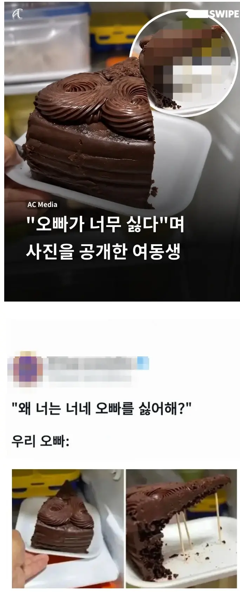

136 · 7 · 18 시간 전 · 원문

누나였으면 귀엽다고 넘어갔을텐데
여동생이라 장난 좀 친거 가지고 바로 SNS에 사진 올리네
수집 당시 댓글 7개
색무세 · 16 시간 전
ㅋㅋㅋㅋㅋㅋㅋㅋㅋㅋㅋㅋㅋㅋㅋㅋ
경평 · 15 시간 전
누나였으면 지가 했을듯
ediredo · 13 시간 전
근데 겉에가 제일 맛있지 않냐 빵은 별로여서
일진교육미이수자 · 13 시간 전
동생을 위해서 개맛있는 부분만 남겨뒀네 여진족새끼
제정신인가 · 9 시간 전
케익발사대만 다쳐먹고 액기스는 다 남겨줬네
자몽에이드 · 7 시간 전
오빠 없어서 다행이다
곰은사람을찢어 · 1 시간 전
ㅋㅋ악마네
ㅋㅋㅋㅋㅋㅋㅋㅋㅋㅋㅋㅋㅋㅋㅋㅋ